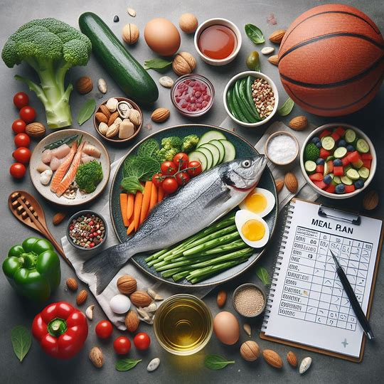

LeBron James
Off-Season Meal Plan
When he's training or getting ready for the season, James likes to incorporate a diet that limits processed foods, sugar, dairy, and foods high in carbohydrates. Instead, James eats lean meats, fish, fruit, and vegetables. This diet includes salmon, vegetable salads, chicken breast, omelets, and much more.